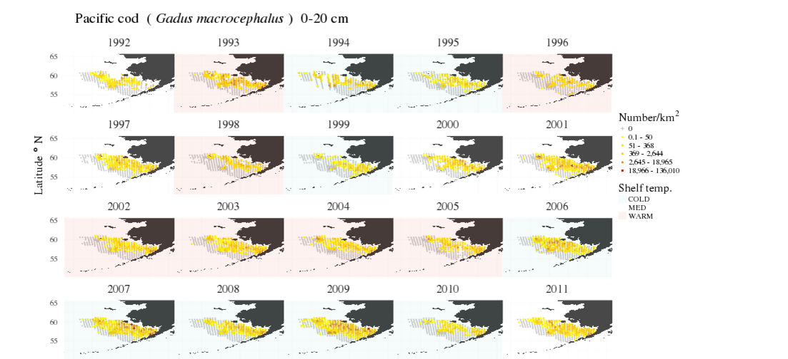

Visualizations of groundfish distributions from the Alaska Fisheries Science Center bottom trawl surveys

Steven J. Barbeaux, Alaska Fisheries Science Center
Steve.Barbeaux@noaa.gov 1 17 January 2018 10.28966/PSESV.2018.001
Visualization of the distribution and centroids of groundfish surveyed during the Alaska Fisheries Science Center standardized bottom trawl surveys of the eastern Bering Sea (EBS) shelf, Gulf of Alaska shelf, Aleutian Islands shelf and eastern Bering Sea Slope are provided. During these surveys researchers have collected species composition and bottom temperature for all tows as well as measurements from all fish species encountered. These data have been used to create visualizations of spatial distribution and distribution by bottom depth and temperature by length bins for all available surveys for groundfish and skate species where adequate length data have been collected ( >2000 specimen per species per survey). This provides a unique look at the spatial and environmental preferences of a wide variety of species, as well as ontogenetic shifts in spatial distribution and environmental preferences. The visualizations provided are meant to facilitate a better understanding of the life histories of these species over time and space and provide clues to how climate change may potentially impact species at different life stages.
groundfish, Eastern Bering Sea, Gulf of Alaska, Aleutian Islands, trawl survey, ontogenetic shift